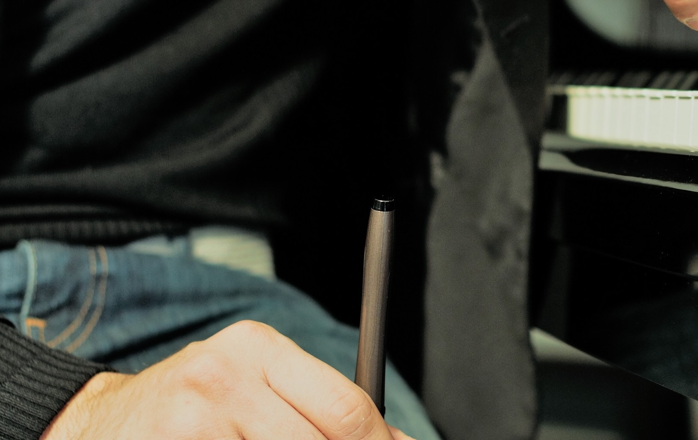

Biography
Fabio Massimo Capogrosso,
Everyone has his story.
The Umbrian composer Fabio Massimo Capogrosso (Perugia 1984) was the first composer in residence in
the history of the Toscanini Philharmonic.
He won the Bassoon Chamber Music Composition Competition in the United States of America in 2015
with the piece 4 Miniature per 4 Strumenti a Fiato.
In March 2016 he was invited to Tampa as the winner of the Call for score of the New Music Festival
organized by the University of South Florida.
He has been a guest at important national and international institutions and festivals such as the National
Academy of Santa Cecilia, the Teatro Alla Scala in Milan, the concerts of the IUC, I suoni delle Dolomiti,
the concerts of the Scuola Normale Superiore of Pisa, the concerts of Amici della Musica in Verona, San
Francisco International Piano Festival, Rebecca Penneys Piano Festival, Villa Pennisi in Musica, Pietre che
Cantano, the International Midsummer Festival; and in theaters such as the Grande di Brescia, the Parco
della Musica in Rome, the Cilea in Reggio, the Palladium in Rome, the Britton Recital Hall of the University
of Michigan, the Barness Music Recital Hall of the University of South Florida.


My history in the industry of Cinema
He has worked with artists such as Carlo Boccadoro, Pamela Villoresi, Marius Bizau, Gianfranco Rosi.
His compositions have been performed in Italy, Spain, Germany, Poland, Belgium, Florida, California,
Michigan, South Korea, China by well-known ensembles, including: Sentieri Selvaggi, Sestetto Stradivari of
the National Academy of Santa Cecilia, Fabrizio Meloni and the Percussionists of La Scala, Quartetto
Falstaff, Red4Quartet of the National Academy of Santa Cecilia, President’s Trio of the University of
South Florida, Strings & Hammers, Trio Solotarev; and by musicians such as Sesto Quatrini, Francesco
Libetta, Ives Abel, Francesco Cilluffo, Orazio Sciortino, Anastasia Feruleva, Alessandro Soccorsi, Mara
Oosterbaan, Edevaldo Mulla, Mina Mijovic, Eunmi Ko, Nina Kim, Conor Nelson, Emily Diez, Kevin
Schempf and Susan Nelson McNamee.
He is among the winners of the ninth edition of Discover America, the prestigious competition organized
by the Chicago Ensemble, and of the first prize at the Keuris Composers Contest 2018.
He was chosen by M ° Marco Bellocchio, winner of Golden Palm for Lifetime Achievement to compose the
soundtrack of Fuori Notte, with Fabrizio Gifuni, Tony Servillo, Margherita Buy, Fausto Russo Alesi.
He is the protagonist of Oltre la Maschera, a documentary by Andrea Campajola produced by Edizioni Curci
and CIDIM-Italian National Music Committee.